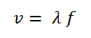
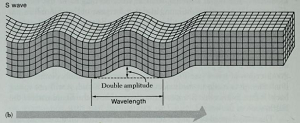
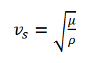
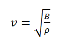
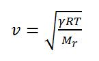

Tujuan
Menentukan cepat rambat gelombang bunyi pada medium padat, medium cair, dan medium gas serta menentukan faktor apa saja yang mempengaruhi cepat rambat gelombang bunyi pada medium padat, medium cair dan medium gas.
Teori
Persamaan Cepat Rambat Bunyi Secara Umum

Cepat rambat gelombang bunyi bergantung pada kerapatan molekul penyusun setiap medium. Secara umum cepat rambat bunyi dapat dituliskan sebagai panjang gelombang dikalikan dengan frekuensi sumber bunyi.

Keterangan:
v = cepat rambat gelombang bunyi (m/s)
λ = panjang gelombang (m)
f = frekuensi (Hz)
Sedangkan untuk cepat rambat gelombang bunyi dalam beberapa medium sebagai berikut:
Cepat rambat bunyi pada zat padat
Gelombang bunyi yang merambat pada medium padat ada dua gelombang yaitu gelombang primer dan sekunder. Menurut Kiswiranti (2019) gelombang primer atau gelombang kompresi atau gelombang shear termasuk gelombang kompresi dan geser (merambat melalui volume padat) sedangkan gelombang sekunder merupakan gelombang permukaan yang bergerak di sepanjang permukaan bebas. Gelombang primer dapat menjalar dalam segala medium (padat, cair maupun gas). Gerakan partikel medium yang dilewati ini adalah searah dengan arah penjalaran gelombangnya.

Gelombang S hanya dapat merambat melalui medium padat. Arah osilasi partikel tegak lurus dengan arah rambatnya dan terjadi perubahan bentuk tanpa perubahan volume dapat dilihat pada gambar berikut.
cepat rambat gelombang primer dan sekunder dapat dilihat pada persamaan berikut:


Keterangan:
vp = cepat rambat gelombang primer (m/s)
vs = cepat rambat gelombang sekunder (m/s)
λ = parameter lame (N/m2)
μ = modulus rigiditas (N/m2)
ρ = massa jenis zat (kg/m3)

Cepat rambat bunyi pada zat cair
Sama halnya dengan medium padat, cepat rambat pada medium cair bergantung pada interaksi antara molekul dan sifat inersia medium. Interaksi antara molekul-molekul pada medium cair (sifat elastisitas) dinyatakan dengan modulus Bulk (B), sedangkan sifat inersia medium dinyatakan dalam massa jenis dari medium (ρ). Sehingga cepat rambat gelombang bunyi pada medium cair dapat dituliskan dalam persamaan:

Keterangan:
v = cepat rambat gelombang bunyi (m/s)
B = modulus Bulk (N/m)
ρ = massa jenis zat (kg/m3)
Cepat rambat bunyi pada zat gas
Berbeda halnya dengan dua medium sebelumnya, cepat rambat pada medium gas dipengaruhi oleh suhu, semakin tinggi suhu udara semakin cepat juga bunyi akan merambat, begitupun sebaliknya. Selain itu, jenis partikel yang menyusun gas juga mempengaruhi cepat rambat gelombang bunyi. Persamaan cepat rambat gelombang bunyi dapat dituliskan sebagai berikut:

Keterangan:
v = cepat rambat gelombang bunyi (m/s)
γ = Konstanta Laplace
R = konstanta umum gas (8,31 Nm/mol K)
T = suhu gas (K)
Mr = massa molekul relatif (gram/mol)

Alat dan Bahan
- Komputer, laptop atau smartphone
- Jaringan internet
- Browser (Chrome, Mozila Firefox, dll.)
Langkah Kerja
- Buka alamat website laboratorium virtual gelombang bunyi sebagai berikut:
http://virtuallabgelombangbunyi.000webhostapp.com/ - Kemudian klik mulai.
- Lalu pilih praktikum, selanjutnya pilih cepat rambat.
- Buat keadaan saat gelombang merambat pada medium padat dengan cara,
- Mengatur medium menjadi medium padat pada kolom pilih medum
- Mengatur massa jenis dan modulus Young aluminium sesuai dengan tabel medium padat
- Kemudian klik Start
- Kemudian catat cepat rambat gelombang yang dihasilkan
- Lakukan cara yang sama untuk besi, beton, kayu, dan kuningan.
- Buat keadaan saat gelombang merambat pada medium cair dengan cara,
- Mengatur medium menjadi medium cair pada kolom pilih medum
- Mengatur massa jenis dan modulus Bulk air sesuai dengan tabel medium cair
- Kemudian klik Start
- Kemudian catat cepat rambat gelombang yang dihasilkan
- Lakukan cara yang sama untuk alkohol dan air raksa.
- Buat keadaan saat gelombang merambat pada medium gas dengan cara,
- Mengatur medium menjadi medium gas pada kolom pilih medum
- Mengatur suhu gas, massa molar, dan konstanta laplace Helium sesuai dengan tabel medium gas.
- Kemudian klik Start
- Kemudian catat cepat rambat gelombang yang dihasilkan
- Lakukan cara yang sama untuk hydrogen, natrium, oksigen, dan karbon oksida.
Hasil Pengamatan
- Cepat rambat gelombang bunyi pada medium padat
- Cepat rambat gelombang bunyi pada medium cair
- Cepat rambat gelombang bunyi pada medium gas
| No. | Nama Zat | Massa Jenis (kg/m3) | Modulus Young (N/m2) | Cepat Rambat (m/s) |
|---|---|---|---|---|
| 1. | Aluminium | 2.700 | 70 x 109 | |
| 2. | Besi | 7.900 | 100 x 109 | |
| 3. | Beton | 2.400 | 20 x 109 | |
| 4. | Kayu | 300-900 | 10 x 109 | |
| 5. | Kuningan | 8.400 | 100 x 109 |
| No. | Nama Zat | Massa Jenis (kg/m3) | Modulus Bulk (Pa) | Cepat Rambat (m/s) |
|---|---|---|---|---|
| 1. | Air | 1.000 | 2,0 x 109 | |
| 2. | Alkohol | 800 | 1,0 x 109 | |
| 3. | Air Raksa | 13.000 | 2,5 x 109 |
| No. | Nama Zat | Massa Molar (gram/mol) | Konstanta Laplace | Cepat Rambat (m/s) |
|---|---|---|---|---|
| 1. | Helium (He) | 4 | 1,67 | |
| 2. | Hidrogen (H2) | 1 | 1,41 | |
| 3. | Natrium (N2) | 23 | 1,40 | |
| 4. | Oksigen (O2) | 32 | 1,40 | |
| 5. | Karbon Dioksida (CO2) | 44 | 1,30 |
Bahan Diskusi
- Bagaimana pengaruh modulus Young dan massa jenis zat terhadap cepat rambat gelombang bunyi pada medium padat?
- Bagaimana pengaruh modulus Bulk dan massa jenis zat terhadap cepat rambat gelombang bunyi pada medium cair?
- Bagaimana pengaruh massa molar dan konstanta laplace terhadap cepat rambat gelombang bunyi pada medium gas?
- Faktor apa saja yang mempengaruhi gelombang bunyi dalam merambat pada sebuah medium?
Kesimpulan
Presentasikanlah hasil kerja kelompok Anda di depan kelas.
Good Luck... :)